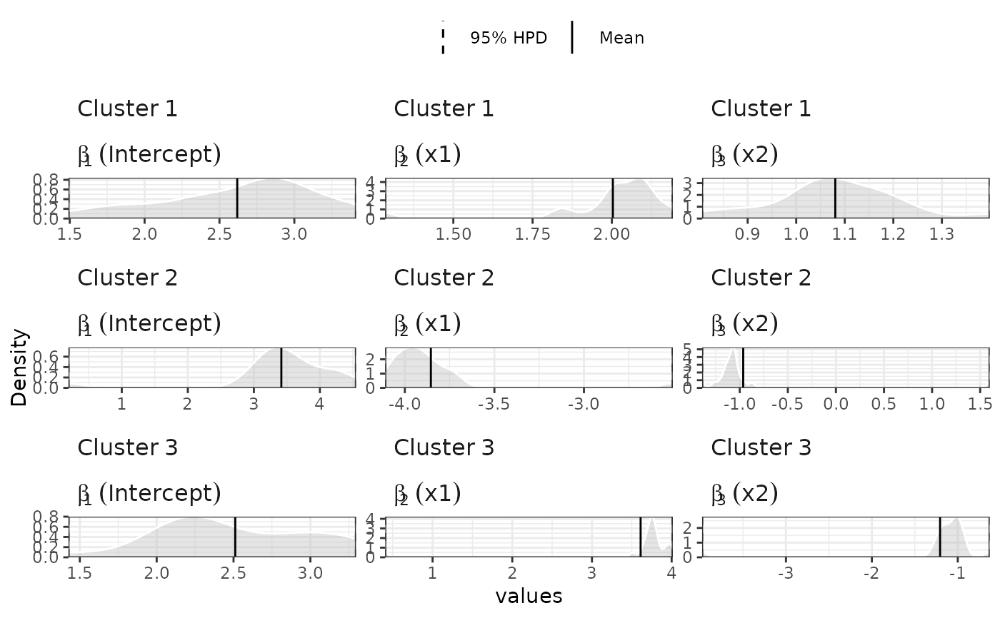

The function estimates a semi-parametric mixture of Generalized Linear Models. It uses a (hierarchical) Dependent Dirichlet Process Prior for the mixture probabilities.
hdpGLM(
formula1,
formula2 = NULL,
data,
mcmc,
family = "gaussian",
K = 100,
context.id = NULL,
constants = NULL,
weights = NULL,
n.display = 1000,
na.action = "exclude",
imp.bin = "R"
)a single symbolic description of the linear model of the
mixture GLM components to be fitted. The syntax is the same
as used in the lm function.
eihter NULL (default) or a single symbolic description of the
linear model of the hierarchical component of the model.
It specifies how the average parameter of the base measure
of the Dirichlet Process Prior varies linearly as a function
of group level covariates. If NULL, it will use
a single base measure to the DPP mixture model.
a data.frame with all the variables specified in formula1 and formula2. Note: it is advisable to scale the variables before the estimation
a named list with the following elements
- burn.in (required): an integer greater or equal to 0
indicating the number iterations used in the
burn-in period of the MCMC.
- n.iter (required): an integer greater or equal to 1
indicating the number of iterations to record
after the burn-in period for the MCMC.
- epsilon (optional): a positive number. Default is 0.01.
Used when family='binomial' or
family='multinomial'. It is used in the
Stormer-Verlet Integrator (a.k.a leapfrog
integrator) to solve the Hamiltonian Monte
Carlo in the estimation of the model.
- leapFrog (optional) an integer. Default is 40. Used when
family='binomial' or family='multinomial'.
It indicates the number of steps taken at each
iteration of the Hamiltonian Monte Carlo for
the Stormer-Verlet Integrator.
- hmc_iter (optional) an integer. Default is 1. Used when
family='binomial' or family='multinomial'.
It indicates the number of HMC iteration(s)
for each Gibbs iteration.
a character with either 'gaussian', 'binomial', or 'multinomial'. It indicates the family of the GLM components of the mixture model.
an integer indicating the maximum number of clusters to truncate the Dirichlet Process Prior in order to use the blocked Gibbs sampler.
string with the name of the column in the data that uniquely identifies the contexts. If NULL (default) contexts will be identified by numerical indexes and unique context-level variables. The user is advised to pre-process the data to provide meaningful labels for the contexts to facilitate later visualization and analysis of the results.
either NULL or a list with the constants of the model. If not NULL,
it must contain a vector named mu_beta, whose size must be
equal to the number of covariates specified in formula1
plus one for the constant term; Sigma_beta, which must be a squared
matrix, and each dimension must be equal to the size of the vector mu_beta;
and alpha, which must be a single number. If @param family is 'gaussian',
then it must also contain s2_sigma and df_sigma, both
single numbers. If NULL, the defaults are mu_beta=0,
Sigma_beta=diag(10), alpha=1, df_sigma=10,
s2_sigma=10 (all with the dimension automatically set to the
correct values).
numeric vector with the same size as the number of rows of the data. It must contain the weights of the observations in the data set. NOTE: FEATURE NOT IMPLEMENTED YET
an integer indicating the number of iterations to wait before printing information about the estimation process. If zero, it does not display any information. Note: displaying informaiton at every iteration (n.display=1) may increase the time to estimate the model slightly.
string with action to be taken for the NA values. (currently, only exclude is available)
string, either "R" or "Cpp" indicating the language of the implementation of the binomial model.
The function returns a list with elements samples, pik, max_active,
n.iter, burn.in, and time.elapsed. The samples element
contains a MCMC object (from coda package) with the samples from the posterior
distribution. The pik is a n x K matrix with the estimated
probabilities that the observation $i$ belongs to the cluster $k$
This function estimates a Hierarchical Dirichlet Process generalized
linear model, which is a semi-parametric Bayesian approach to regression
estimation with clustering. The estimation is conducted using Blocked Gibbs Sampler if the output
variable is gaussian distributed. It uses Metropolis-Hastings inside Gibbs if
the output variable is binomial or multinomial distributed.
This is specified using the parameter family. See:
Ferrari, D. (2020). Modeling Context-Dependent Latent Effect Heterogeneity, Political Analysis, 28(1), 20–46. doi:10.1017/pan.2019.13.
Ferrari, D. (2023). "hdpGLM: An R Package to Estimate Heterogeneous Effects in Generalized Linear Models Using Hierarchical Dirichlet Process." Journal of Statistical Software, 107(10), 1-37. doi:10.18637/jss.v107.i10.
Ishwaran, H., & James, L. F., Gibbs sampling methods for stick-breaking priors, Journal of the American Statistical Association, 96(453), 161–173 (2001).
Neal, R. M., Markov chain sampling methods for dirichlet process mixture models, Journal of computational and graphical statistics, 9(2), 249–265 (2000).
## Note: this example is for illustration. You can run the example
## manually with increased number of iterations to see the actual
## results, as well as the data size (n)
set.seed(10)
n = 300
data = tibble::tibble(x1 = rnorm(n, -3),
x2 = rnorm(n, 3),
z = sample(1:3, n, replace=TRUE),
y =I(z==1) * (3 + 4*x1 - x2 + rnorm(n)) +
I(z==2) * (3 + 2*x1 + x2 + rnorm(n)) +
I(z==3) * (3 - 4*x1 - x2 + rnorm(n))
)
mcmc = list(burn.in = 0, n.iter = 20)
samples = hdpGLM(y~ x1 + x2, data=data, mcmc=mcmc, family='gaussian',
n.display=30, K=50)
#>
#>
#> Preparing for estimation ...
#>
#>
#>
#> Estimation in progress ...
#>
#> [======== ] 10 %
[=========== ] 15 %
[=============== ] 20 %
[================== ] 25 %
[====================== ] 30 %
[========================= ] 35 %
[============================= ] 40 %
[================================ ] 45 %
[==================================== ] 50 %
[======================================= ] 55 %
[=========================================== ] 60 %
[============================================== ] 65 %
[================================================== ] 70 %
[===================================================== ] 75 %
[========================================================= ] 80 %
[============================================================ ] 85 %
[================================================================ ] 90 %
[=================================================================== ] 95 %
[=======================================================================] 100 %
[=======================================================================] 100 %
summary(samples)
#>
#> --------------------------------
#> dpGLM model object
#>
#> Maximum number of clusters activated during the estimation: 7
#> Number of MCMC iterations: 20
#> burn-in: 0
#> --------------------------------
#>
#> Summary statistics of clusters with data points
#>
#> --------------------------------
#> Coefficients for cluster 1 (cluster label 1)
#>
#> Post.Mean Post.Median HPD.lower HPD.upper
#> 1 (Intercept) 2.6186470 2.788780 1.4915915 3.411479
#> 2 x1 2.0031830 2.047074 1.2854579 2.192036
#> 3 x2 1.0804425 1.074716 0.8061879 1.398172
#> 4 sigma 0.9662621 0.946454 0.8187803 1.201651
#>
#> --------------------------------
#> Coefficients for cluster 2 (cluster label 2)
#>
#> Post.Mean Post.Median HPD.lower HPD.upper
#> 1 (Intercept) 3.4164836 3.491561 0.1929092 4.545936
#> 2 x1 -3.8546982 -3.924547 -4.1091255 -2.504030
#> 3 x2 -0.9639251 -1.072734 -1.3911950 1.597516
#> 4 sigma 1.0808798 1.028380 0.8352036 1.850468
#>
#> --------------------------------
#> Coefficients for cluster 3 (cluster label 3)
#>
#> Post.Mean Post.Median HPD.lower HPD.upper
#> 1 (Intercept) 2.511278 2.358269 1.4263435 3.2962476
#> 2 x1 3.610481 3.754351 0.4065272 4.0137426
#> 3 x2 -1.205971 -1.063207 -3.9759510 -0.6300267
#> 4 sigma 1.085310 1.041716 0.8778983 1.5321617
#>
#> --------------------------------
plot(samples)
#>
#>
#> Generating plot...
#>
plot(samples, separate=TRUE)
#>
#>
#> Generating plot...
#>

## compare with GLM
## lm(y~ x1 + x2, data=data, family='gaussian')